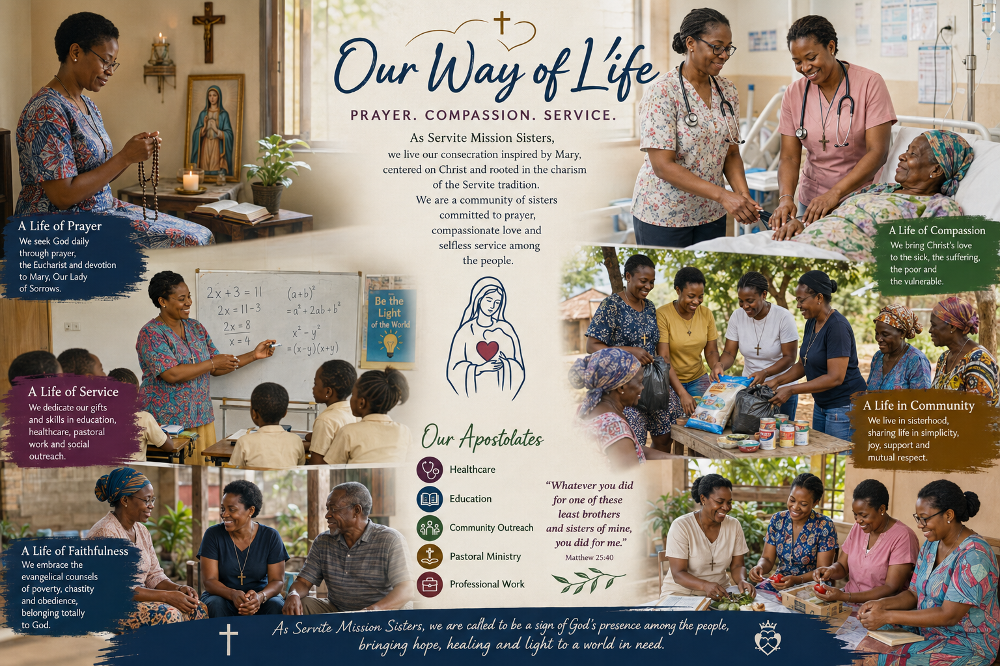

Rooted in the spirituality of the Servite tradition, we live our vocation fully within society and among the people, bringing the presence of Christ into the realities of everyday life through prayer, service, professional engagement, and apostolic witness. Inspired by the Blessed Virgin Mary, under the title of Our Lady of Sorrows, we strive to accompany humanity with compassion, humility, and faithful service. Our vocation enables us to respond creatively and generously to the needs of the Church and society. We engage in a variety of apostolic ministries, adapting our service to the circumstances and challenges of the communities we serve. Our mission extends to healthcare, education, business, civil service, community development, pastoral ministry, and other fields where our presence and service are needed.
Our mission is to live our vocation of consecrated life faithfully, witnessing to the Gospel through prayer, the evangelical counsels, and apostolic service. United in the Servite spirit, we participate in the mission of the Church by fostering faith, hope, and charity and by dedicating our lives to the mission of the Church.

Prayer of Consecration for the African Mission and Beyond
O Lord our God, unless You build this work, we labour in vain, and unless You watch over it, all our efforts are empty. We place before You the establishment, the growth, and the mission of the Servite Mission Sisters in every place where You choose to plant and expand it. We commit this mission and all its work to You. We trust in You. Guide every step, direct every decision, and align everything with Your will and Your time. Go before this mission, O God of our salvation. Grant what is needed according to Your purpose and bring to fulfilment what You have begun. Be the Shepherd and the guide of this mission. Lead it when the path is not clear. Give strength when the work becomes heavy. Keep it steady and faithful in all things. Build what should be built. Protect what should be protected. Establish what must remain. Open the doors that come from You and close those that do not. We offer this mission entirely to You. Let it grow, serve, and remain for Your glory alone.
Our Lady, Mother of the Servants of Mary, pray for us.
St. Juliana, pray for us.
The Seven Holy Founders, pray for us.
All the Saints, pray for us.
Amen.
“Remain at the foot of the Cross with Mary, present to God and present to humanity.”